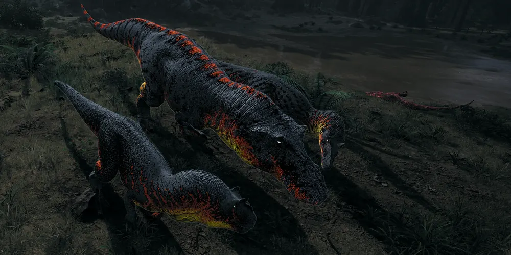
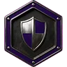
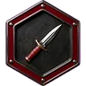
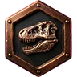
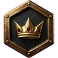

Contra otros clanes
Batallas del clan
Cada batalla contra otro clan, con cuántos éramos en cada bando. Salen del registro del canal #batallas del Discord. Cómo peleamos, en la guía de combate.
GARRA IBÉRICAvsDelta
3 de los nuestros3 contra 88 de Delta
Victoria
GARRA IBÉRICAvsSmoke
3 de los nuestros3 contra 66 de Smoke
Victoria
Jerarquía
Rangos del clan
Se sube con tiempo, pero sobre todo por cómo juegas y cómo eres con la manada. El tiempo es solo un mínimo: los ascensos los decide el staff y no se piden.
-
Tropa

Recluta
Periodo de prueba al entrar en el clan.

Miembro
Parte de la manada. Tras una o dos semanas activo como Recluta, cumpliendo las normas y jugando en grupo.
-
Mando medio

Veterano
Miembro de confianza y con experiencia que guía a los reclutas. Tras ~1 mes como Miembro, si eres constante, buen compañero y sabes sobrevivir.

Líder de Escuadra
Dirige grupos en partida: cazar, defender nidos y moverse por el mapa. Lo eligen Alfa y Beta: hay que saber coordinar, mantener la calma y que la gente te siga.
-
Alto mando

Beta
Oficiales: aceptan solicitudes, moderan y proponen ascensos, que aplica un Alfa. Solo por invitación del alto mando.

Alfa
Los tres jefes del clan, al mismo nivel. Tienen la última palabra.
Clanes amigos

Aliado
Miembros de clanes amigos. No son de la manada, pero en partida se les trata como tal.
¿Te ves en la manada?
Todos empiezan como Recluta.
Únete a GARRA IBÉRICA en Discord (se abre en una pestaña nueva)